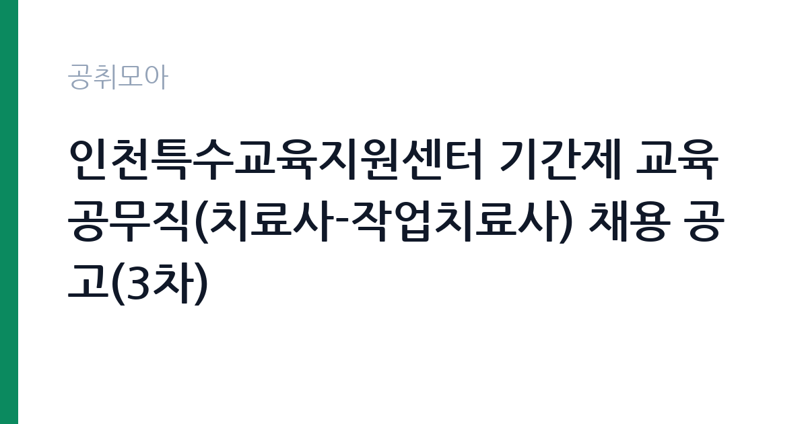

[교육청] 인천특수교육지원센터 기간제 교육공무직(치료사-작업치료사) 채용 공고(3차)
인천광역시교육청 학교교육국 · 인천 · 마감 2026-10-16 (D-6) · 출처 나라일터

한눈에 보는 모집 조건
| 기관 | 인천광역시교육청 학교교육국 |
|---|---|
| 공고명 | 인천특수교육지원센터 기간제 교육공무직(치료사-작업치료사) 채용 공고(3차) |
| 고용형태 | 공무직 |
| 근무지 | 인천 |
| 게시일 | 2026-10-08 |
| 마감일 | 2026-10-16 (D-6) |
지원자격, 이렇게 읽으세요
- 기간제교육공무직(치료사) 1명
- 접수 ~2026-10-16 마감
- 세부 조건은 원문 공고문 확인
자격요건은 작업치료사 면허증 소지로 명확합니다. 면허가 없는 분께서는 지원하실 수 없으며, 면허증 사본과 관련 증빙서류를 접수 때 제출하셔야 합니다. 3차 공고라는 점에 주목하실 필요가 있습니다. 1차와 2차에서 적격자를 찾지 못했거나 합격자가 포기했을 가능성이 있어, 요건을 갖춘 분께는 경쟁 부담이 낮아진 기회일 수 있습니다. 접수 방법은 전자메일과 방문 접수이며 우편접수는 받지 않습니다. 이메일 접수처는 인천특수교육지원센터이며 접수 확인 후 답장 이메일이 발송되므로, 답장이 오지 않았다면 접수 여부를 전화로 확인하시는 편이 안전합니다. 방문 접수는 평일 9시부터 16시 30분까지 가능하고 점심시간과 공휴일은 제외됩니다. 모든 접수는 접수 마감일 14시까지 도착분에 한한다고 안내되어 있으니 마감 시각을 이중으로 확인하십시오.
이 공고의 포인트
학교 기반 작업치료는 병원 임상과 다른 전문 영역으로, 특수교육대상 학생의 학교생활 적응과 직무 기능 향상을 돕는 교육적 치료입니다. 인천특수교육지원센터 소속으로 관내 고등학교를 순회하며 내방과 방문 치료를 병행하게 되므로, 소아와 청소년 작업치료 경험을 집중적으로 쌓을 수 있습니다. 약 3개월의 단기 계약이지만 학교 현장 경력은 교육청과특수교육 관련 기관 지원 때 직접적인 실적으로 작용합니다. 3차 공고라 서류 경쟁이 완화된 상태일 가능성이 있으며, 면허 소지자라는 명확한 자격 기준 덕분에 평가의 예측 가능성이 높습니다. 방학을 앞둔 학기말 시점의 집중 치료 지원이라는 점에서 업무 강도와 일정을 미리 가늠해 보시기 바랍니다.
전형은 어떻게 진행되나
전형 일정이 촘촘하게 짜여 있습니다. 접수 기간은 10월 9일 9시부터 10월 16일 낮 12시까지이며, 서류심사 결과는 10월 16일에 개별 통보됩니다. 면접은 10월 19일 예정이며 장소와 시간은 개별 통보되고, 최종합격자 발표는 10월 20일 예정입니다(출처: 나라일터 모집공고 발췌). 접수 마감 당일에 서류심사 결과가 나올 만큼 일정이 빠듯하므로, 접수와 동시에 면접 준비를 시작하시는 편이 좋습니다. 서류심사에서는 면허와 관련 경력, 지원서 성실도를 평가하고, 면접에서는 학교 현장 적응력과 학생 응대 역량을 확인하는 것이 일반적입니다. 개별 통보 방식이므로 연락처를 정확히 기재하고 모르는 번호의 전화도 면접 안내일 전후에는 받아보시기 바랍니다.
원문에서 확인한 전형 방식
[ 인천특수교육지원센터 기간제 교육공무직(치료사) 채용] ○ 모집분야 : 기간제 교육공무직(치료사)-작업치료사 ○ 선발직급 : 기간제 교육공무직 ○ 고용형태 : 기간제 ○ 자격요건 : 작업치료사 면허증 ○ 채용기간: 2026.10.26. ~ 2027.1.23. ○ 근무장소: 인천특수교육지원센터(인천안산초 내) *인천광역시시 관내 고등학교 순회 작업치료을 위한 출장 ○ 접수기간 : 2026.10.9.(금) 09:00 ~ 2026.10.16.(금) 12:00 ○ 접수방법 : 전자메일, 방문 접수 (우편접수 불가) ※ 모든 접수(전자메일, 방문)는 접수 마감일 14:00까지 도착분에 한함 1) 이메일 접수: 97hansam@ice.go.kr ※ 접수 확인 후 답장 이메일 전송 2) 방문 접수: 인천특수교육지원센터(인천 계양구 임학서로 15, 인천안산초 신관 5층) ※ 방문 접수 시 평일 09:00~16:30 가능(단, 점심시간 12:00~13:00 및 공휴일(토·일) 제외) ○ 서류심사결과 발표: 2026. 10. 16.(금) - 개별 통보 ○ 면접일시 및 장소: 2026. 10. 19.(월) 예정 – 개별 통보 ○ 최종합격자 발표: 2026. 10. 20.(화)
이런 분께 추천해요
- 작업치료사 면허를 소지하고 소아와 청소년 대상 임상 경험을 쌓고 싶으신 분께 적합합니다.
- 학교와 특수교육 현장에 관심이 있어 교육청 산하 기관 경력을 시작하고 싶은 분께 좋은 자리입니다.
- 2026년 10월 말부터 3개월간 집중 근무가 가능하고 인천 관내 고등학교 순회 출장에 적응할 수 있는 분께 권합니다.
지원 전 체크리스트
- 작업치료사 면허증의 유효 여부와 면허증 사본, 경력증명서 등 증빙서류를 미리 챙기십시오.
- 이메일 접수 후 확인 답장이 왔는지 살피고, 답장이 없으면 전화로 접수 여부를 확인하십시오.
- 방문 접수 시 평일 9시부터 16시 30분 사이에만 가능하고 점심시간과 주말은 제외된다는 점을 기억하십시오.
- 순회 치료를 위한 출장 가능 여부와 통근 거리, 3개월 단기 계약의 근무조건을 따져본 뒤 지원하십시오.
모집 일정과 제출 타이밍
접수는 10월 9일 9시에 시작해 10월 16일 낮 12시에 마감됩니다. 서류심사 결과는 마감 당일인 10월 16일에 개별 통보되고, 면접은 10월 19일, 최종합격자 발표는 10월 20일로 이어집니다. 근무 시작일은 10월 26일입니다. 접수부터 출근까지 3주 안에 모든 절차가 끝나는 만큼, 지원서와 증빙서류, 면접 준비를 병렬로 진행하셔야 합니다. 이메일 접수자는 접수 확인 답장을 반드시 챙기시고, 면접 안내를 개별 통보로 받게 되므로 10월 16일 이후에는 연락이 닿도록 대기하시기 바랍니다.
직무 이해하기: 교육청
작업치료사는 특수교육대상 학생의 일상생활 동작과 학교생활 적응에 필요한 기능을 평가하고 중재하는 전문가입니다. 인천특수교육지원센터에서는 센터 내방 학생과 관내 고등학교 순회 대상 학생에게 작업치료를 제공하며, 평가와 중재계획 수립, 회기 진행, 기록과 경과 보고가 주요 업무입니다. 소근육 운동과 감각통합, 보조공학기기 활용, 직업 전환기 학생의 직무 기능 훈련 같은 영역을 다루게 됩니다. 교사와 학부모, 특수교육 담당자와 협력하는 일이 많아 치료 기록의 정확성과 소통 능력이 함께 요구됩니다. 단기간에 여러 학교를 오가는 순회 구조이므로 일정 관리와 이동 체력도 필요한 자리입니다.
자기소개서 작성 팁
지원서에는 작업치료사로서의 임상 철학과 아동과 청소년 대상 경험을 중심으로 적으시는 편이 좋습니다. 실습과 임상에서 다룬 연령대와 중재 영역, 사용해 본 평가도구를 구체적으로 적어주십시오. 학교 현장 경험이 있다면 교사와 협력해 세운 중재 목표와 그 결과를 사례로 풀어내시면 설득력이 높아집니다. 순회 치료의 특성을 이해하고 있다는 점을 드러내시고, 짧은 계약 기간 안에 학생들에게 실질적인 도움을 주겠다는 계획을 담으시면 좋은 평가를 기대할 수 있습니다. 면허 취득 과정과 보수교육 이수도 빠짐없이 기재하십시오.
면접 준비 포인트
면접에서는 학교 기반 작업치료에 대한 이해와 학생 응대 역량을 주로 확인합니다. 문제행동을 보이는 학생이나 치료를 거부하는 학생을 만났을 때의 대응 방안을 묻는 질문이 나올 수 있으므로, 본인의 원칙과 경험을 사례로 준비해 두십시오. 교사와 학부모에게 치료 경과를 설명하는 상황을 묻는 질문에는 전문 용어를 쉽게 풀어 전달하는 능력을 보여주시는 편이 좋습니다. 순회 근무의 이동 부담과 단기 계약에 대한 의지를 묻는 질문도 예상되므로 긍정적인 근무 계획을 밝혀주십시오. 단정한 복장과 더불어 학생을 대하는 따뜻한 태도를 전달하시는 것이 중요합니다.
급여·근무조건 읽는 법
보수 조건은 원문 공고문의 보수 항목에서 확인하시기 바랍니다. 인천광역시교육청 기간제 교육공무직의 보수는 교육청의 교육공무직 보수 규정에 따라 정해지는 것이 일반적이며, 자격과 경력에 따라 산정되는 경우가 많습니다. 4대 보험과 주휴수당, 퇴직금(1개월 이상 근무 시 관련 법령 적용) 같은 조건도 공고문에 안내되므로 직접 대조하십시오. 원문에 구체적인 금액이 제시되어 있지 않다면 임의로 추측하지 마시고, 인천특수교육지원센터에 문의하시는 편이 정확합니다.
자주 묻는 질문
- 3차 공고라는 것은 무슨 의미인가요?
앞선 1차와 2차 모집에서 채용이 마무리되지 않아 다시 모집하는 것입니다. 조건이 낮아졌다는 의미는 아니지만 요건을 갖춘 분께는 경쟁이 완화된 기회가 될 수 있습니다. - 접수 방법과 마감 시각을 알려주세요.
전자메일과 방문 접수만 가능하며 우편접수는 받지 않습니다. 접수 기간은 10월 9일 9시부터 10월 16일 낮 12시까지이고, 모든 접수는 마감일 14시까지 도착분에 한한다고 안내되어 있으니 여유 있게 접수하십시오. - 근무 장소와 형태는 어떻게 되나요?
인천 계양구의 인천특수교육지원센터가 기본 근무지이며, 인천 관내 고등학교를 순회하며 작업치료를 제공하는 출장이 포함됩니다. 채용 기간은 2026년 10월 26일부터 2027년 1월 23일까지입니다.
함께 보면 좋은 공고
[교육청] 2026년 제11회 경기도교육청 임기제공무원 채용시험 공고[홍보기획(5급), 언론(7급), 교육공무직원 소통·관리(5급)] — 마감 2026-10-19[교육청] 경기도교육청 정보화담당관(개방형직위) 공개모집 공고 — 마감 2026-10-26[교육청] 정동고등학교 기간제 조리실무원 한시적(대체) 채용 계획 공고 — 마감 2026-10-16출처: 나라일터 공개정보를 바탕으로 공취모아가 정리한 안내글입니다. 모집 조건·일정은 변경될 수 있으니 지원 전 반드시 원문 공고문을 확인하세요. 본 글은 정보 제공용이며 합격을 보장하지 않습니다.